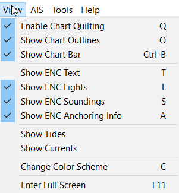

Enable Chart Quilting
Options Setting - Show Chart Outlines
Chart Status Bar - Show Chart Bar
Vector Display Tab - Show ENC Text
Vector Display Tab - Show ENC Lights
Vector Display Tab - Show ENC Soundings
Vector Display Tab - Show ENC Anchoring Info
Tides and Currents - Show Tides
Tides and Currents - Show Currents
Night Navigation - Change Color Scheme
Enter Full Screen F12